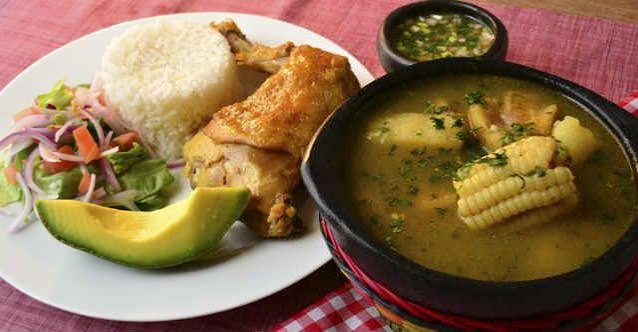

Sancocho de gallina: sopa espesa en fogón de leña con gallina criolla, plátano verde, yuca, papa, mazorca y cimarrón.
Pandebono: pan de almidón de yuca, queso costeño y maíz.
Champús: bebida espesa de maíz cocido, lulo, piña, panela, clavos y canela.
Lulada: lulo machacado a mano con limón, hielo picado y azúcar o leche condensada.
Chontaduro con miel y sal: fruto callejero, aperitivo energético.
Fritanga de la tarde: aborrajados, empanadas y marranitas con champús o lulada.

Los alimentos se comparten en reuniones familiares y son parte de la identidad popular de Cali: una muestra de hospitalidad y de sus expresiones culturales. El paseo de olla dominical reúne a las familias en el río Pance a cocinar sancocho en leña.